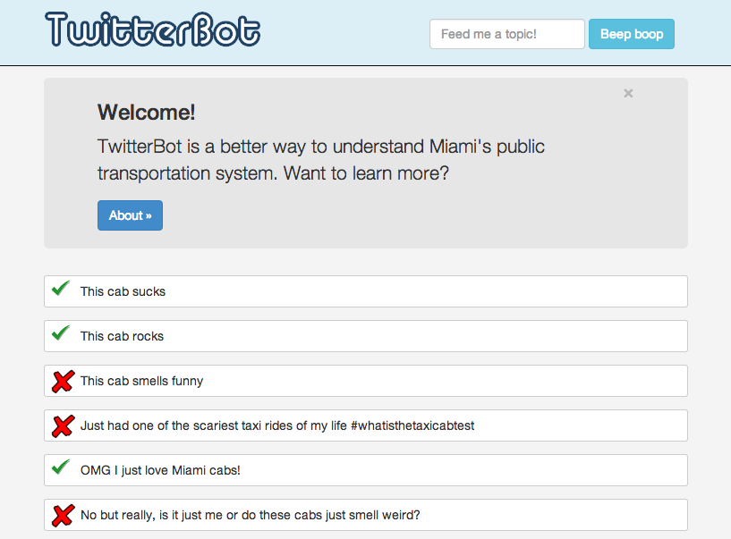

# Table of Contents
~ Android
~ iOS
# Web Coding
~ MusiCalendar: a room reservation system built for the university of florida's school of music.

~ Gainesville Utilities Lookup: a referencing tool to organize utilities usage data from across the city.

~ Chuck's Photography: a portfolio website for a Colorado wildlife photographer.
(website is temporarily disabled, but you can find the code here.)
~ Go Vote, BC!: offers resources to local citizens before the 2014 gubernatorial debate at broward college. Code here.
~ Miami-Dade Budget Visualizations: breaks down the county's budget in a more accessible format. Code here.

~ Eatable Webapp: the web app component to a Gainesville startup that provided 'smart' food recommendations.

~ TwitterBot: Uses Twitter data to analyze how locals feel about taxi cabs. Read the code here.
# Android
~ Simple To-do List: Organize your day, without the clutter. Code here.
# iOS
Twyst: A musical instrument app created during MHacks (the University of Michigan's Hackathon).
# Python Scripts
~ Jeopardy TwitterBot: an application which holds over 1,700 jeopardy questions. it tweets a random question and posts the answer to its wordpress blog. See its Twitter feed here.
# Teaching Experience
~ Hangman: a puzzle for my Java Fundamentals students to learn how to code basic methods. Try and solve it!
# Content Management
~ gainesville harvest: a local food bank. Hosted on wordpress
~ Miami LocalWiki: an online encyclopedia curated by Miamians, for Miamians. Hosted on LocalWiki.
~ UF Phi Mu Alpha: my music faternity, and one of the best decisions I've made. Hosted on Wordpress.
# Nostalgia
~ Racquetball: my first game.